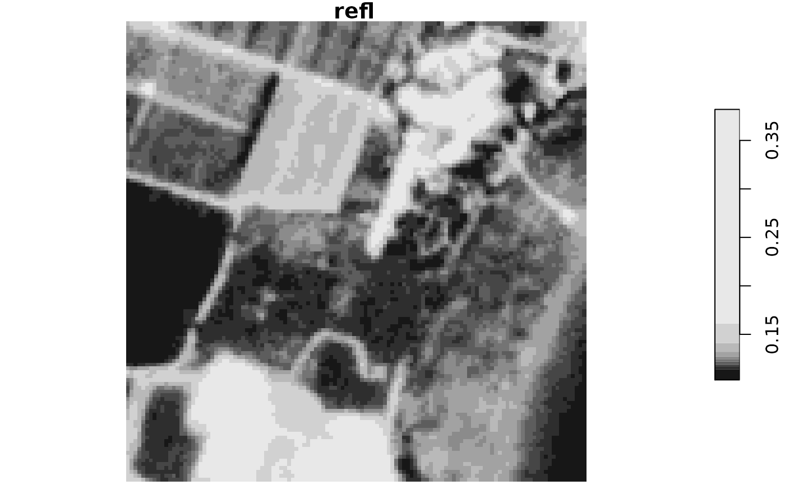

toa_rad_to_boa_refl.RdConverts a TOA radiance image to a BOA reflectance image.
toa_rad_to_boa_refl(toa_rad, params)
| toa_rad | A |
|---|---|
| params | A |
A stars image with bottom of atmosphere reflectance values
The atmospheric correction coefficients (Xa, Xb, Xc) returned by the sixs_params function can be used to calculate bottom of the atmosphere (BOA) reflectance from top of the atmosphere (TOA) radiance using the following formulas (1) and (2) (Zhao, Tamura, and Takahashi 2001):
(1) y = Xa * TOA - Xb
(2) BOA = y / (1 + Xc * y)
where 'y' is an intermediate variable, 'TOA' is the top of the atmosphere radiance, 'BOA' is the bottom of the atmosphere reflectance, and 'Xa', 'Xb', 'Xc' are the correction coefficents returned by the sixs_params function.
Zhao, W., Tamura, M., & Takahashi, H. (2001). Atmospheric and spectral corrections for estimating surface albedo from satellite data using 6S code. Remote sensing of Environment, 76(2), 202-212.
library(sixs) library(XML) # Get image metadata for band 3 l = xmlToList(venus1m) m = get_venus_metadata(l, band = 3) # Rescale and select band 3 venus1_toa_refl = venus1 * 0.001 venus1_toa_refl = venus1_toa_refl[,,,3,drop=TRUE] # Convert TOA reflectance to TOA radiance venus1_toa_rad = refl_to_rad( toa_refl = venus1_toa_refl, date = m$date, esun = bands$esun[3], solar_zenith_angle = m$solar_zenith_angle ) # The 6S parameters (see 'sixs_params' function) xcoefficients = c(0.00369, 0.11777, 0.12263) # Convert TOA radiance to BOA rteflectance venus1_boa_refl = toa_rad_to_boa_refl(venus1_toa_rad, xcoefficients) # Plot plot(venus1_toa_refl)